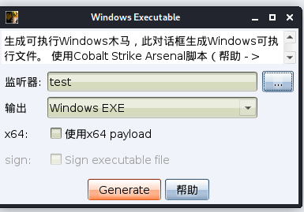

Cobalt Strike学习
比较流行的三款后渗透工具：
Cobalt Strike Metasploit (图形化：Armitage) Empire
Cobalt Strike简介
Cobalt Strike是一款由Java编写的全平台多方协同渗透测试框架，在3.0版本之前它基于Metasploit框架工作，相当于增强版的Armitage，在3.0后的版本已独立成一个为目标攻击和模拟对抗而设计的渗透测试平台，主要用于执行有目标的攻击和模拟高级威胁者的后渗透行动。Cobalt Strike集成了端口转发、端口扫描、socket代理、提权、钓鱼、远控木马等功能。该工具几乎覆盖了APT攻击链中所需要用到的各个技术环节，且其最大的优点在于可以进行团队合作和优越的UI界面。
Cobalt Strike架构
Cobalt Strike分为服务器(TeamServer)组件和客户端(Client)组件。在Cobalt Strike工作中，服务器可以有多个，客户端也可以有多个，客户端与团队服务器是多对多的关系，实现了团队的分布式协作。
团队服务器(TeamServer)
服务器组件，也就是团队服务器，是Beacon payload的控制器，也是Cobalt Strike社会工程功能的托管主机。
团队服务器还存储由Cobalt Strike收集的数据，并管理日志记录。
Cobalt Strike团队服务器必须在受支持的Linux系统上运行。要启动一个Cobalt Strike团队服务器，需要使用Cobalt Strike Linux安装包中的teamserver脚本文件。
客户端(Client)
Cobalt Strike客户端是团队成员实现各种攻击功能的主体，也是Cobalt Strike的核心。
使用Cobalt Strike客户端，必须要连接至团队服务器，Cobalt Strike客户端支持Windows、Linux、MacOS多个平台。
分布式的团队协作
Cobalt Strike可以协同红队的分散行动，使用一个或更多的teamServer并让你的团队与其建立连接，分阶段的筹划整个攻击流程。
一旦连接至同一个teamServer，client将：
- 使用相同的会话
- 分享主机、捕获的数据和下载的文件
- 通过一个共享的事件日志交流
当连接到多个团队服务器，Cobalt Strike客户端会汇总所有它连接的团队服务器的监听器。这种聚合允许攻击者从一台团队服务器引用托管在另一台团队服务器上的恶意网站、钓鱼邮件等资源。在你行动的末期，Cobalt Strike的报告功能会查询所有你连接到的团队服务器，合并这些数据来描述一个完整的事件。

架构多台团队服务器(例如钓鱼、攻击、后渗透、持久化)，也就是分解整个攻击链，这是分布式行动模型的基本思想。
启动Cobalt Strike
启动团队服务器
1 | |
针对teamserver的特征隐藏下面再讲。
启动客户端连接
Windows中，运行start.bat；Linux中，运行start.sh
或者
1 | |
输入团队服务器ip、端口、用户名（随意）、密码（上面设置的密码），点击“连接”。
出现指纹校验对话框，显示服务端SSL 证书的SHA256哈希值，每次创建Cobalt Strike团队服务器时生成的指纹都不一样，请确认它是否和你的服务端启动时显示的指纹相匹配，以防止中间人攻击。Cobalt Strike还会记住这个SHA256哈希，方便以后连接。点击 “是” 。
进入操作界面，Cobalt Strike就启动成功了。
Cobalt Strike Client界面功能
Cobalt Strike Client界面分为两部分，界面的顶部是会话或目标的视觉化展示，底部展示了与之交互的Cobalt Strike功能或会话的标签页。可以点击这两部分之间的区域调整这两个区域的大小。
菜单栏
Cobalt Strike
| New Connection | 创建新连接，加入服务端 |
|---|---|
| Preferences | 偏好设置，设置界面样式 |
| Visualization | 视图模式，包括Pivot Graph、Session Table、Target Table三种 |
| VPN Interfaces | VPN接口管理 |
| Listenrs | 监听器管理 |
| Script Manager | 脚本管理 |
View-视图
| Applications | 靶机的应用信息 |
|---|---|
| Credentials | 查看从靶机获取的账户密码 |
| Downloads | 查看从靶机下载的文件 |
| Event Log | 事件日志，可用于团队聊天 |
| Keystrokes | 键盘记录 |
| Proxy Pivots | 查看代理 |
| Screenshots | 查看屏幕截图 |
| Script Console | 脚本控制台，用于加载脚本 |
| Targets | 显示目标靶机 |
| Web Log | Web日志 |
Attacks-攻击
| Packages | 生成各种后门，包括HTA、OFFICE宏病毒、多种语言的Payload、EXE木马等 |
|---|---|
| Web Drive-by | Web服务配置与管理，包括管理Web服务、克隆网站、开启Web服务供下载文件等 |
| Spear Phish | 鱼叉式攻击 |
Reporting-报告
| Activity report | 生成操作报告 |
|---|---|
| Hosts report | 生成主机报告 |
| Indicators of Compromise | 生成威胁报告 |
| Sessions report | 生成会话报告 |
| Social engineering report | 生成社会工程学报告 |
| Tactics, Techniques, and Procedures | 生成策略、技巧和程序报告 |
| Reset Data | 重置数据 |
| Export Data | 导出数据 |
工具栏
可视化展示
Cobalt Strike提供三种可视化展示，包括Pivot Graph、Session Table、Target Table，可以通过工具栏的Cobalt Strike → Visualization 在不同的可视化形式之间切换。
Pivot Graph(拓扑图模式)
可以很清楚地查看各主机之间的关系，该视图在大规模内网渗透和APT中非常直观和实用。

Session Table(会话列表模式)
这个视图是我们渗透测试中最为常用的，它主要显示的是当前所有的会话，会话的权限，会话运行在目标机上的pid等等

Target Table(目标列表模式)
显示在beacon中执行主机存活扫描/端口扫描后探测出的存活的主机。

Cobalt Strike使用
监听器listener
通过 Cobalt Strike → Listeners 打开监听器标签页，这里会列举出所有配置的监听器，并可以对监听器进行管理。
选择Add，添加一个监听器。
监听器分为
内部的Listener
- Beacon DNS
- Beacon HTTP
- Beacon HTTPS
- Beacon SMB
- Beacon TCP
内部的Listener
- External C2
- Foreign HTTP
- Foreign HTTPS
如下创建一个HTTP监听器。
创建攻击Attacks
Packages生成后门
Packages生成的后门包括：
| HTML Application | 生成一个恶意HTML Application木马，后缀格式为 .hta。 |
|---|---|
| MS Office Macro | 生成office宏病毒文件 |
| Payload Generator | 生成各种语言版本（C、C#、COM Scriptlet、Java等）的payload |
| Windows Executable | 生成32位或64位的exe和基于服务的exe、DLL等后门程序 |
| Windows Executable(S) | 生成exe、DLL等后门程序，其中包含Beacon的完整payload，不需要阶段性的请求。 |
如下生成一个32位Windows Executable。选择刚创建的监听器，点击Generate，保存生成的后门文件。
Beacon上线
将生成的后门程序拷贝到受控主机上，点击运行。Cobalt Strike上线成功。
默认sleep为60s，可以通过右键对象 → 会话 → Sleep… 修改。